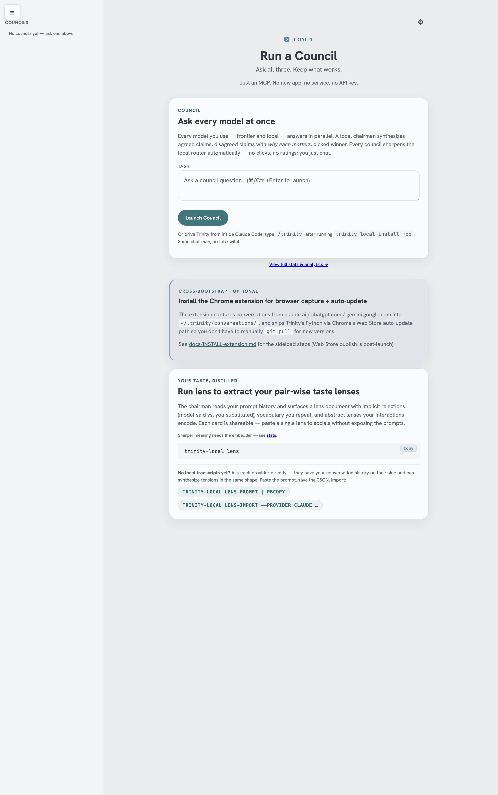

Keep what works.
Throw the rest.
Essays on building durable systems in an age of disposable answers — and the tools that come out of writing them. Reality isn't a noun — it's a verb. The point was never the destination. It was always the becoming.
Trinity Local
Most ideas on this site ended up in a single product. This is the first one.
Ask all three. Keep what works.
Send one prompt to Claude, ChatGPT, and Gemini in parallel. A chairman synthesizes the verdict — what they agreed on, where they split, which answer wins — free, local, on the subscriptions you already pay for. No API key. Your transcripts never leave your machine.

Just an MCP and a Chrome extension — no new app, no cloud, no API key. Lives inside Claude Code, Codex CLI, Antigravity, and Cursor. Your transcripts never leave your machine. Day one, you run councils: ask once, all three labs answer in parallel, and the chairman hands you one synthesized verdict — plus exactly where they split. That works the moment you install.
Then it gets sharper. Your lens builds quietly in the background from the transcripts already on your disk — the pattern in how you rephrase, judge, and decide. A first pass takes minutes, not days, and you never wait on it: councils work without a lens, and it upgrades them once it's ready, sharpening every time you use it. Once it's there, every council runs through your lens — the chairman stops returning the generic answer and starts returning the one you would have picked.
And when a new model lands, score it against your taste. Not a generic leaderboard — a per-axis number on your own hardest questions: "Opus 4.8 gave me what I wanted 84% of the time." A benchmark no lab can publish, because only the layer above the labs sees your judgment across all three.
- Run a council across all three labs — day one
- See exactly where the models split
- Your lens builds from transcripts already on your disk
- Then every council runs through your lens — the answer you'd pick
- Score any new model against your taste the day it lands
- Every council sharpens your local routing
- Embedding model + index stay local
The thinking behind the build
Seven essays on what stays durable once AI commoditizes the rest — each one naming a principle that ended up load-bearing for Trinity. Read together, they circle a single idea: what stays valuable when the answers get cheap.
Utopia is a Mechanism
Democracy, science, free speech — not values, algorithms. Distributed error correction. Knowledge isn't a settled state of being right; it's the dynamic process of being less wrong. Utopia is not a destination; it's a mechanism.
The AI-Native Way
The Bitter Lesson, restated for builders. Rules and logic you write in code don't matter long-term. The only durable strategy is a systems-level data pipeline: find the edges, save the failures, finetune, repeat. That loop is what gets better over time.
Design the Affordance
It's a design problem, not a prediction problem. Behavior is not goal-driven — it's a structural affordance. The motivation industry is 70 years of symptom management. Six moves replace the entire incentive layer.
The Architecture of Endurance
Scale is not a size; it is a shape. Endurance is the same shape, repeated — with a wall around every copy. Separation of powers, in the language of machines, is a refusal to pass the gradient.
The Gravity of Becoming
Difficulty was never the point. Depth was. Time to Wow: under five seconds. Time to Mastery: infinity. In a world of flawless AI outputs, imperfection becomes proof of humanity.
The Architecture of Becoming
The Builder's Trinity — grit, curiosity, simplicity — and why the goal was never a flawless foundation, but a distributed system of error correction. Reality isn't a noun. It's a verb.
Free You More
Two things can learn what you like — a recording and an apprentice. The recording needs you forever; the apprentice frees you. Don't build the thing that needs you less. Build the thing that frees you more.